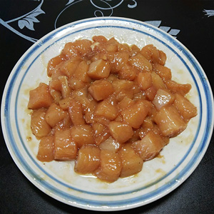
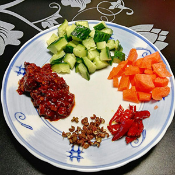
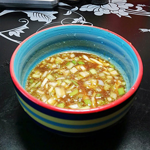
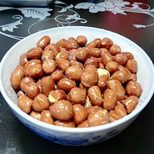
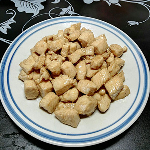
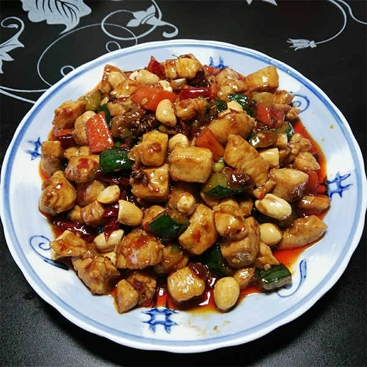

Cut 1 pound boneless/skinless chicken breast into 1 inch cubes.

Mix 1 tablespoon shaoxing wine, 1 tablespoon light soy sauce, 1 tablespoon sesame oil, 1 tablespoon starch, and appropriate amount of salt and egg white together. Mix with chicken and let it marinate for about 30 minutes.

Cut the cucumber, carrot, and small red peppers into chunks, put them together with hot chili paste and Sichuan peppercorns in a plate.

Mix 1 tablespoon Chinese black vinegar, 1 tablespoon sugar, 1/2 tablespoon oyster sauce, 1 tablespoon shaoxing wine, 1 tablespoon honey, 2 tablespoon chicken broth/water, 1/2 tablespoon sesame oil, 1 tablespoon starch, and chopped green onion and garlic all together in a bowl.

Deep fried peanuts with low fire, then mix with some salts after take them out.

Use high fire to stir fry chicken chunks for about 15 seconds. Take them out once the color change.

Keep the oil in the pot, put Sichuan peppercorns and small red peppers into the pot, stir fry with low fire until the smell comes out.
Change to high fire, add hot chili paste, cucumber and carrot, stir fry until they become soft.
Add chicken chunks, stir for about 2 minutes, then pull the sauce into the pot, stir again until they mix together.